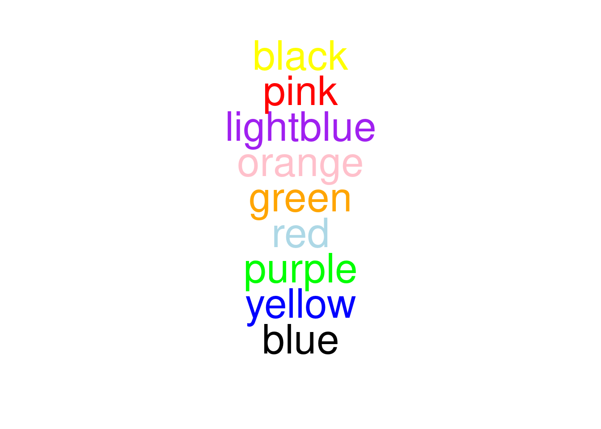

![]()

I have been lucky to participate in the project lead by Sarah McAnulty called Skype a scientist. I recently did two more calls with 11th grade students who attend Dowal school in Honduras. This was the first time I did Skype a Scientist in Spanish!
As usual, I should say it was great to be able to talk with students, tell them about science in general and my research. It was really fun to answer their questions.
I compiled the Q&A session below.
Personal questions
The “how did you choose to be a neuroscientist” question was quite popular. It came in all these forms:
- How did your professional career begin?
- What was your motivation for studying this career?
- What made you decide you wanted to be a neuroscientist?
- What was your inspiration to study that exact part of the body? Why not other?
- How did you decide Neuroscience was your passion? And what things made you decide this career?
- What inspired you to choose this career?
- What led you to study this career?
- When did you start to have an interest in this career and why?
The answer is:
I just felt really curious about how the natural world works. I could see beauty in Math and later in Chemistry, and wanted to learn more. Living things are by far the most complex systems we know of, so I was totally down for the challenge of figuring out how they work.
How many years did you study?
I can tell you how many years I’ve been in school. Elementary school was 7, middle/high-school was 5, then university added another 5-6 years, 2 years for my Master’s of Science degree. School is just the beginning.
How young where you when you decided to study your major?
I was 17. In Argentina you chose your “major” in the last year of high school. I chose Biology. Then, 3 years into the career, I chose neuroscience specifically (I was probably 21-22), to specialize in for 2-3 more years.
What would you have studied if it was not neuroscience? // What do you think would have been of yourself if you had studied something else?
Probably Chemistry or Engineering. If I could go back in time, I would tell myself to study Physics or Computer Science.
Was neuroscience always your passion, or did you want to study something else?
I started with biology but rather quickly wanted to study the brain specifically.
What ability do you think separates humans from other animal species?
So far that we know, humans are aware (see below) and can communicate that quite clearly. Humans can also build upon knowledge of previous generations.
What is the hardest topic or part to understand about Neuroscience?
Neuroscience is full of hard, really hard, problems. I would have to say the most difficult is consciousness. How are we aware of being aware? How is it that we distinguish ourselves as an I that exists and has a will? Where is that voice in your head coming from? I wrote a short story about it, I might publish it some day :).
What is the part that isn’t too important of the brain?
I would have to say that you need 100% of your brain to function the way you do. I am not quite eager of losing any part of my brain, all of them are too important.
What is the difference between brain neurons and normal neurons?
I am a bit confused about the term normal neurons. There are neurons in the brain, neurons in the spinal cord and in our digestive tract. The basic principles of all neurons are the same, but, even in the brain, they differ in shape and physiological properties. Here’s a drawing from Cajal showing different neurons in the human cortex.

Does your family feel good with what are you studying or they wanted you to study another thing?
My family was always supportive. As usual, a career in science looks difficult and it might seem like it’s quite tough to get a job, so there were some doubts, but nonetheless my family was supportive.
Why do we sometimes forget the words we were going to say at the time?
This is a great question. I don’t have a clue! Please, if you find out, let me know!
Why is your research important?
It’s quite difficult to pinpoint why any experiment is important. But we can think about knowledge as a circle, and questions as a frontier to the outside (the unknown). The more we study and answer questions, the more the circle grows. The larger the circle, the more things the scientific field can improve our lives. Interestingly, the more the circle grows, the larger the frontier, meaning we have more questions to answer1!
Have you learned any lesson from your years of work that you can apply in your daily life? // Does this job affect your personal life in any way?
Yes, see below.
What event in your life as a neuroscientist marked you in your personal life and why?
Being a scientist involves dealing with information about the world. A fact is a fact. Now, there are different ways of making sense of that fact, and the way scientists do it is by building models (creating a hypothesis) and making predictions. Scientists should always start by trying to prove themselves wrong. Only when they failed to prove themselves wrong, they tend to accept a version of the world (the one that better fits that fact).
Presented with an observation people tend to go with intuitive explanations of why it happened. Normally, that intuitive is close to whatever that person has at hand, whatever personal experience they have (we call this reasoning by induction, which is quite useful and intuitive, but often fails). Scientific training should aim to teach to think in counterintuitive ways.
For example:

Observation 1: I see a white swan.
Observation 2: I have never seen a black swan.
It is tempting to conclude that black swans do not exist. And the whole world thought that way until they went to Australia and New Zeland and found a black one!

The bottom line is, being a scientist teaches you to approach facts by questioning your intuition and making testable arguments. Do not belive whatever is writen, no mater where it is writen, judge the content, hold it to the highest standard.
Do you think that later on, when neuroscience is more advanced, there could exist the cure to neurological diseases?
When nuroscience advances more, we will find more cures or treatments. There will be no unique cure, because there is no unique neurological disease.
Why is it that when you read the words that describe an experience, you can sometimes, perfectly imagine the situation?
That is a great question. I was recently discussing this with other neuroscientists. The truth is that we do not know. But our mind is perfectly capable of creating images (when you sleep yo can see even though your eyes are closed!). The mind is quite powerful at doing this. Try the following task. If you want to be scientific about it, you can time yourself!
Trial 1: As fast as you can, read out loud the word sequence.
Trial 2: As fast as you can, name out loud the color.
What task was more difficult? You can see how powerful the interference of reading is. It’s quite difficult to name the color when the word clearly says another thing! This is called Stroop Effect
What was the most difficult subject while studying to become a neuroscientist?
Physics has some concepts that are difficult to grasp like Optics, Thermodynamics and Electromagnetism.
How are memories stored and retrieved?
That’s one of the best questions I ever had. Actually, that was one of the questions that lead me to study neuroscience in the first place. Although there are certain hypothesis, we know little about how it is done. You can start here. If you want to know more scientific detail, hit me up and I will send you a bunch of papers :)
Are you happy or satisfied with what you’ve attained in your life so far?
Wow this is getting to the hard stuff! I would say I have come a long way but there’s definitely room for improvement and new challenges to tackle.
What goals are you looking forward to achieve in your career as a neuroscientist?
I would like to be able to keep doing research in science. Hopefully be able to contribute to a better understanding of disase and treatment.
What is the most difficult part of being a neuroscientist? // What is the hardest part of your carreer?
Dealing with failure. We must be perseverant and smart about pivoting directions when we fail.
Do you have seen something that does not have any explication about animal behavior? // Have you ever had a situation in which you don’t know the solution to in your career?
Every day, all day, all the time! No, seriously, we need help trying to figure animal behavior, please come help us!
What’s your biggest inspiration to do science? // What is the thing you like most about it?
It’s beautiful. The feeling of understanding something deep about our Universe is quite rewarding.
How did studying in MIT help develop more your career?
I got to work with nice people and do a bunch of cool science. That will get the research published (hopefully soon!) and it will allow me to continue my career as a scientist.
What tips can you give for those people that what to study neuroscience?
Perseverance, we all fail, push forward. Find a team and contribute to that team with the best you can. Other people have given better advice than me here. It’s long but I highly recommend it.
Would you consider the outdoor activities you practice important for any scientific or personal development?
Yes, running, playing sports, dancing, and any outdoor/physical activities are crucial to physical well-being and mental health.
How can animals feel pain?
We animals have pain receptors that comunicate the sensation of pain. See more info here.

What is the process you most use when researching animal behavior?
I would say looking at the animals with my eyes. Everything else is a way to quantify and modify the intuition I get from looking at the animals.
Do animals can have the same diseases as humans?
Some diseases affect all animals, some diseases affect some animals, some are human-specific (for example HIV - AIDS).
Does this work involve more physiology or biochemistry?
It involves everything. Everything you learn can be useful (even if it’s not scientific per se).
Can you explain the difference between MRI and CT scans?
Both techniques can be used to image tissue. The main difference is that one uses X-rays (CT scan) and the other uses magnetic fields and radiowaves to do it (MRI)
What would happen if a kid is born without a developed central nervous system and how you will solve it?
It probably depends on the type of underdevelopment. Unfortunately, I would not be able to solve it (I do not work with clinical patients, I work with animals in basic research).
What is the behavior of cockroaches after being irriated with co-60?
I have no idea. After googling co-60, that is cobalt 60, I found out it is actually a radioactive form of cobalt. My question is: how much co-60 are we talking about? Anyway, that experiment has been done, in a paper called Some Early Effects of Ionizing Radiation on the German Cockroach,Blattella germanica. Authors concluded that radiation destroys reproductive organs and produces death. I don’t think behavior was affected but definitely lifespan was.
Have you ever been scared of working with a specific animal? // Is it complicated being Neuroscientist and interacting with a certain species?
Yes, working with animals is a little bit challenging. Rodents are, in general, much easier to work with than other animals. Some animals are more scary to work with (owls, bats, monkeys, pigs). Wild animals are probably really hard to work with.
What made you interact with animals instead of humans? // Why did you wanted to study animal behavior instead of human behavior? // Why did you choose to be a neuroscientist that focused on animals?
I’m most interested in interventions. We can’t open human brains to see what’s going on.
How difficult and compromising is to choose neuroscience as a future career?
It definitely involves commitment. And commitment alone will not get you very far. You can be very committed and still not get good things out of it. Do not underestimate your network and pure luck!
How has working with animals improved your knowledge about human behavior?
It has given me the possibility to test ideas about human behavior on animal models.
What has been the most difficult species of animal that you have worked with?
All species have their perks and difficulties. I wouldn’t be able to tell.
How do you understand the behavior of animals?
We normally try to condense behavior into variables that we can measure. That help us build theories we can test with more experiments.
What is the dominant mammalian animal species used in a neuroscience research?
By dominant I pressume you mean frequent. It’s probably mice (mus musculus).
Do you ever get intimidated by others in your same career?
Of course, unfortunately, science is not devoid of hierarchical structures and people at the top can be scary sometimes.
What type of breakfast do you have every morning?
I have either a toast with cream cheese or an omlette. Some fruit maybe, banana milkshake if I’m feeling like it’s a special day. Tea always.
How hard did you work to have this job?
Not like REALLY REALLY hard. Coal miners have it way worse than me, and they have to work in a harmful environment (for a lot less pay!). That being said, I feel that I have had to put effort into it, it was not automatic.
Is it true that if humans eat other humans their brains get damaged and if it is true why it only affects humans?
Yes, if they it other human brains and those brains have something called prions, it can happen. It’s not specific to humans, see Bovine spongiform encephalopathy.
How you compare your work with your social life? // Do you have extra time for your family and other business? // How do you manage to balance your work and your social life?
During the week, work comes first. During the weekend, social life comes first. About the “other business”, I’m not sure, do you have an offer I can’t refuse?
Are there any animal models of self-mutilation?
I have not come across any during my experience, but other people definitely have something to say about it, see here.
What is something you always wanted to do that you have not done it yet and why?
I have visited many places in the World. I still would like to travel more.
Even though humans are more envolved, do animals have a more complex brain?
Humans are not more evolved2. Human brains are definitely more complex.
What concepts of the study of animals you dislike the most?
The first thing I should note is that, regardless of how careful and caring we are, we won’t be able to do neuroscience without intervention on animals. These animals live confined and we often perform surgeries on them. That’s not awesome, but it’s
Beyond that, I would say I don’t like the fact that we can’t talk to them. They can’t express how they feel, what’s going on on their minds whenever we study them. We have to work around this, infer their mental state from other variables.
Have you ever be surprised by an animal case with a mutation?
We work with mutants all the time. A mutation is not how you might see it pictured in movies. In fact, your own DNA is mutating all the time, for the rest of your life. That being said, there are certain mutations that produce very interesting effects (we call them phenotypes). Here’s the ob/ob mouse model:

These animals can’t produce leptin, a hormone involved in energy balance and metabolism. They never experience a signal that tells them to stop eating (leptin) and hence they eat much more and gain a lot of weight.
Questions about Argentina
Where would you have liked to study if it wasn’t in Argentina?
Probably in Europe. Assuming I have to do it in English, the UK, or any international school in Germany, Switzerland or Finland. Assuming I speak German, in Germany or Switzerland.
Do you think Argentina is one of the most expensive countries to study in? // Do you consider Argentina a country where is rentable to study? // Do you think Argentina is one of the most expensive countries to go study?
Education in Argentina at public unviersities is free. The overall quality is good, even compared to top schools in the US or Europe.
On favorites
I am really really bad at chosing favorites and don’t like rankings. But below is my attempt to answer these questions.
What is your favorite aspect of your research?
Thinking about questions and making theories about how the whole thing works.
What is your all time favorite book?
I don’t have a favorite book. You can see the books I have read in the last years here. There’s a lot of books I have read but not registered (sorry about that ¯\_(ツ)_/¯)
What’s your favorite series?
I’m not good with choosing favorites, so I will go with the one I’ve watched the most growing up: The Simpsons.
Footnotes
This idea is not mine, I took it from Ignorance by Stuart Firestein↩︎
All species are quite evolved to a certain niche. In fact, we humans have not been around for a lot of time, compared to other animals.↩︎
Reuse
Citation
BibTeX citation:
@online{andina2019,
author = {Andina, Matias},
title = {Skype a {Scientist} Part 2},
date = {2019-09-13},
url = {https://mauribo2.github.io/WebSite/posts/2019-09-13-skype-a-scientist-2/},
langid = {en}
}
For attribution, please cite this work as:
Andina, Matias. 2019. “Skype a Scientist Part 2.” September
13. https://mauribo2.github.io/WebSite/posts/2019-09-13-skype-a-scientist-2/.